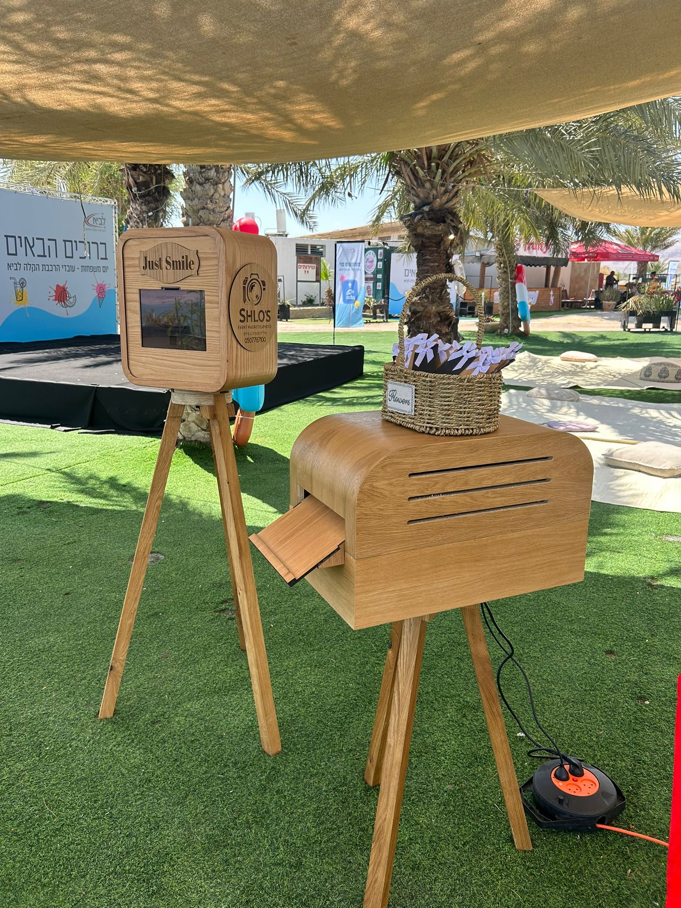
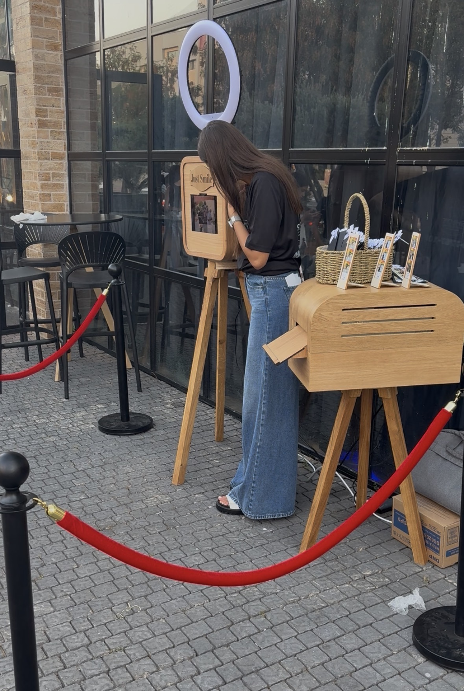
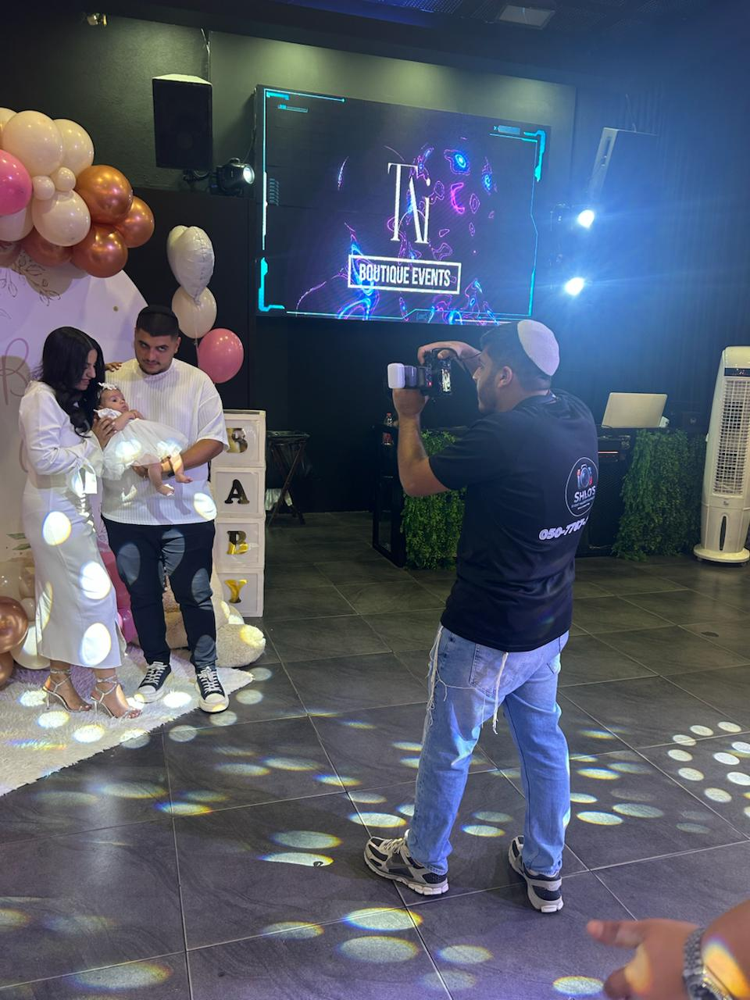

עמדת צילום לאירועים – הלב הפועם של המסיבה
עמדת צילום טובה לא רק “מצלמת” – היא יוצרת רגע. רגע שבו החברים מצחיקים אחד את השני, המשפחה מתחבקת, והאורחים מרגישים כמו על סט צילומים. זו הפינה שאליה כולם חוזרים שוב ושוב לאורך הערב.
ב־SHLO'S EVENT אנחנו בונים עמדת צילום שהיא שילוב בין עיצוב מוקפד, תאורה מחמיאה וצוות שמוציא מהאורחים את החיוך הכי טבעי.
מה מיוחד בעמדת הצילום שלנו?
- עיצוב ברמה של סט צילום: רקעים, סטיילינג ותאורה שמרגישים כמו קטלוג.
- זרימה טבעית באירוע: האורחים ניגשים לבד – לא צריך “לדחוף” אותם לצילום.
- מתאימה לכל גיל: ילדים, הורים, סבים וסבתות – כולם מוצאים את עצמם בעמדה.
- מזכרת מיידית: משלבים את הצילומים עם מגנטים, Mini Me או מעמדי עץ.
עמדת הצילום היא המקום שבו כל האורחים עוברים – ולכן היא אחת הנקודות הכי מצולמות והכי מדוברת באירוע.
📸 דברו איתנו על עמדת צילום לאירוע שלכם


מעמדי עץ מעוצבים + עמדת צילום – הפינה שהאורחים לא שוכחים
מעבר למגנטים ולצילום, אחד הדברים שהכי מדברים עליהם אחרי האירועים שלנו הוא עמדת צילום עם מעמדי עץ מעוצבים וחריטה אישית. זו פינה שמצטלמת מדהים, מושכת את האורחים ומרגישה כמו משהו שיצא מקטלוג.
- עבודת יד איכותית: מעמדי עץ מעוצבים בקפידה, ליטוש נקי וגימור יוקרתי.
- חריטה בהתאמה אישית: שמות, תאריך, משפט מיוחד, פסוק או לוגו – מה שתרצו חרוט לנצח.
- עמדת צילום מסביב למעמדים: הרקע, התאורה והסטיילינג בנויים כך שהאורחים ירצו להצטלם שוב ושוב.
- מזכרת שגם נשארת בבית: אחרי שהאירוע מסתיים – המעמדים הופכים לפריט דקורטיבי מרגש לסלון, למשרד או לחדר.
זו העמדה שאנשים מעלים לסטורי, מתייגים, מדברים עליה למחרת בעבודה ושואלים אתכם: “מאיפה הבאתם את זה?”.
📸 דברו איתנו על עמדת צילום עם מעמדי עץ

צילום סטילס & וידאו – כי אירוע טוב לא מגיע בלי תיעוד ברמה גבוהה
המגנטים ועמדת הצילום נותנים חוויה באולם, אבל צילום סטילס וידאו הוא מה שגורם לכם להיזכר בכל רגע מחדש – גם אחרי שהשמלה בארון והחליפה כבר מקופלת.
אנחנו משלבים בין צילום דוקומנטרי טבעי לבין רגעים אמנותיים יותר, כאלו שתופסים מבטים קטנים, חיוך של הורה, חיבוק של סבא, צחוק של חברים.
מה אתם מקבלים מאיתנו?
- צילום סטילס מקצועי: פריימים נקיים, זוויות מחמיאות ותיעוד מלא של כל שלב באירוע.
- צילום וידאו זורם וקולנועי: תנועה חלקה, צילומי אווירה ורגעים מרגשים מהחופה/טקס ועד לרחבה.
- נוכחות עדינה: אנחנו שם בכל מקום – אבל בלי להפריע לכם או לאורחים.
- עבודה מסודרת: גיבויים כפולים, כרטיסים נוספים וציוד רזרבי – כדי שלא תאבד אף תמונה.
ואחרי האירוע?
- גלריה דיגיטלית מסודרת שנוחה לשיתוף עם המשפחה והחברים.
- קליפ Highlight קצר ומרגש שמתמצת את האירוע לכמה דקות של רגש.
- אפשרות לקבל צילומים מלאים של חופה / טקס / נאומים.
המטרה שלנו היא שכשאתם תפתחו את התמונות והסרט – תחזרו לשם. תרגישו שוב את המוסיקה, האנרגיה וההתרגשות כאילו זה קרה אתמול.
🎬 רוצה הצעת מחיר לצילום סטילס & וידאו?
צילום סטילס, וידאו ומעמדי עץ – החוויה המלאה באירוע אחד
הרבה לקוחות מגיעים אלינו אחרי אירוע ואומרים: "חבל שלא לקחנו גם סטילס, גם וידאו וגם מזכרת מיוחדת". לכן יצרנו חבילות שמשלבות צילום מגנטים, צילום סטילס מקצועי, צילום וידאו ומעמדי עץ מעוצבים עם חריטה אישית.
צילום סטילס וידאו לאירועים
צוות הצלמים שלנו יודע לתפוס את הרגעים שאי אפשר לחזור אליהם: ההתרגשות בהכנות, החיוך בחופה, החיבוק של סבא וסבתא, הריקודים והטירוף ברחבה.
- צילום סטילס לאירועים: תמונות מקצועיות, עריכה מוקפדת וגלריה דיגיטלית מסודרת.
- צילום וידאו: תיעוד מלא או קליפ Highlight – מזכרת מרגשת שאפשר לראות שוב ושוב.
- שילוב עם מגנטים ועמדת צילום: גם חוויה חיה לאורחים וגם תיעוד מקצועי בשבילכם.
מעמדי עץ + חריטה + עמדת צילום – הדבר הכי מיוחד באירוע
אחד הדברים שהכי מדברים עליהם אחרי האירועים שלנו הוא עמדת צילום עם מעמדי עץ מעוצבים וחריטה אישית. זה לא עוד גימיק – זו פינה יפהפייה באירוע שמושכת את כל האורחים.
- מעמדי עץ בעיצוב יוקרתי: עבודת יד, ליטוש איכותי והתאמה מלאה לסגנון האירוע.
- חריטה בהתאמה אישית: שמות, תאריך, משפט מרגש, פסוק, לוגו עסקי – מה שתרצו.
- עמדת צילום מעוצבת סביב המעמדים: האורחים מצטלמים, מקבלים מגנט / תמונה, ואתם נשארים עם מעמדי עץ שהם מזכרת דקורטיבית לבית.
- הדרן של האירוע: זו העמדה שאורחים מצלמים, מעלים לסטורי ומתייגים – מה שהופך את האירוע שלכם לבלתי נשכח.
כשאתם משלבים בין סטילס, וידאו, מגנטים ומעמדי עץ מעוצבים, אתם לא רק "מסמנים וי" על צילום באירוע – אתם בונים חוויה שלמה, מהקליק הראשון ועד המתנה שבבית.
🎬 דברו איתנו על חבילת סטילס, וידאו ומעמדי עץהשירותים שלנו
ב־SHLO'S EVENT אנחנו מאמינים שאין שני אירועים זהים. לכן בנינו כמה שירותי צילום ומזכרות שאפשר לשלב יחד או לבחור בנפרד, לפי התקציב וסגנון האירוע:
- מגנטים חדים ואיכותיים שנשארים על המקרר במשך שנים.
- עמדת צילום מעוצבת שמתאימה לסגנון ולצבעים של האירוע שלכם.
- צילום סטילס וידאו לאירועים – חבילת צילום מלאה שמספרת את כל הסיפור של הערב.
- מעמדי עץ מעוצבים עם חריטה אישית + עמדת צילום – הפינה הכי מיוחדת באירוע.
- שירות אישי ומשפחתי – אתם לא עוד לקוח, אתם חלק מהאירוע שלנו.

צילום מגנטים
מגנטים באיכות צילום גבוהה, הדפסה חדה, נייר איכותי ומגנט שמחזיק לאורך זמן.
לפרטים על צילום מגנטים
עמדת צילום
עמדת צילום מעוצבת מעץ עם תאורה מקצועית ורקע מתאים – קליק אחד ותמונה מושלמת.
לפרטים על עמדת צילום
עמדת Mini Me
בובות מגנטיות אישיות של האורחים – חוויה הומוריסטית ומזכרת מקורית שלא שוכחים.
לפרטים על Mini Me

מעמדי עץ מעוצבים
מעמדי עץ בעבודת יד עם חריטה אישית – שמות, תאריך או לוגו – שניתן לשלב יחד עם עמדת צילום כפינה מיוחדת באירוע. האורחים מצטלמים, ואתם נשארים עם מעמד עץ שהוא גם מזכרת וגם פריט דקורטיבי.
לפרטים על מעמדי עץלמה לבחור ב־SHLO'S?
יש הרבה ספקים של צילום מגנטים ועמדות צילום. מה שמבדיל אותנו הוא השילוב בין יחס אישי, עבודה מקצועית, הקפדה על כל פרט קטן והרגשה אמיתית של אכפתיות באירוע שלכם.
צילום מקצועי
ציוד צילום מתקדם, עדשות איכותיות ותאורה נכונה שמוציאים מכל אורח את הגרסה הכי יפה שלו.
- צילום חד גם באולמות חשוכים.
- התאמת הצילום לסגנון האירוע.
מגנטים איכותיים
מגנטים עבים, ציפוי מבריק והדפסה שלא דוהה – כדי שהתמונה תישאר על המקרר לשנים קדימה.
- שימוש בחומרים איכותיים בלבד.
- בקרה על כל מגנט לפני שהוא יוצא לאורח.
שירות מכל הלב
צוות חייכן, סבלני ואכפתי שמלווה אתכם לפני, בזמן ואחרי האירוע.
- זמינות לשאלות ותיאומים.
- גמישות בשעות ובבקשות מיוחדות.

עיצוב אישי
מסגרת מגנט מעוצבת לפי הצבעים, הלוגו והאווירה של האירוע שלכם – עד שהכל מרגיש נכון.
- שילוב לוגו, שמות ותאריך.
- אפשרות לשפה גרפית תואמת להזמנה.
שאלות נפוצות על צילום מגנטים ועמדות צילום
מתי כדאי לסגור צלם מגנטים או עמדת צילום?
מומלץ לסגור צלם מגנטים ועמדת צילום כמה שיותר מוקדם, במיוחד בעונות החתונות והחגים. לרוב הלקוחות סוגרים אותנו בין חודשיים לחצי שנה לפני האירוע.
- חגים וקיץ – הביקוש גבוה במיוחד.
- לאירוע קרוב – שווה לבדוק איתנו זמינות גם “בדקה ה־90”.
האם יש מגבלה על כמות המגנטים?
ברוב החבילות שלנו המגנטים הם ללא הגבלה, כדי שהאורחים יוכלו להצטלם שוב ושוב. אנחנו מדפיסים כמה עותקים שצריך לכל תמונה – למשפחה, לזוג ולחברים.
מה ההבדל בין צילום מגנטים לעמדת צילום?
צלם מגנטים יכול לעבור ברחבה ולצלם אורחים, בעוד שעמדת צילום היא מקום קבוע ומעוצב שבו האורחים עוצרים, עושים פוזות ומקבלים חוויה מלאה.
- עמדת צילום – חוויה, אביזרים ורקע.
- מגנטים – המזכרת הפיזית שהולכת הביתה עם האורחים.
איפה אתם עובדים בארץ?
אנחנו מגיעים לאירועים בכל רחבי הארץ, בכפוף לזמינות ולמיקום האירוע. באזורים רחוקים במיוחד ייתכן שתהיה תוספת נסיעה סמלית.
תמונות וסרטונים מאירועים
הצצה קטנה לאווירה באירועים שלנו – עמדות צילום, מגנטים, Mini Me, בלוקי עץ ועוד. את התמונות והסרטונים כאן תוכלו להחליף בקלות לתוכן שלכם.
גלריית תמונות

סרטונים מהשטח
כאן אפשר להוסיף סרטוני וידאו קצרים מהאירועים – קבצי MP4 מהמצלמה או הטמעה מיוטיוב / אינסטגרם.
לקוחות ממליצים
השירות היה פשוט מדהים! כל האורחים עפו על עמדת הצילום והמגנטים יצאו מושלמים. תודה על חוויה בלתי נשכחת!
עמדת Mini Me גנבה את ההצגה! מקצועיים, אדיבים ותוצאה ברמה הכי גבוהה. ממליץ בחום.
שירות אישי מהשיחה הראשונה ועד סוף האירוע. הרגשנו שאתם איתנו באמת, ולא רק “עוד ספק”.